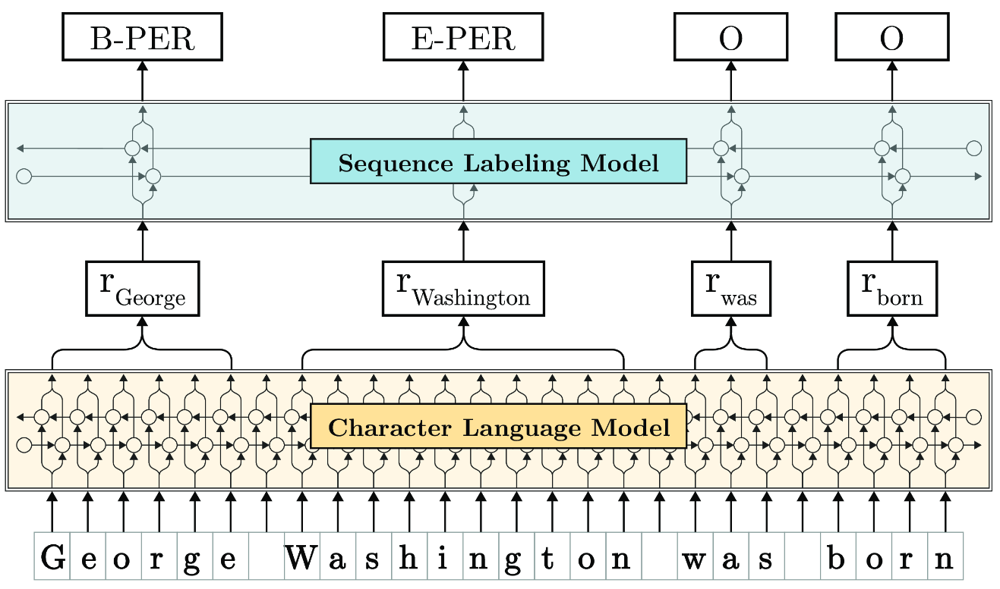

The Flair NLP Framework
My group maintains and develops Flair, an open source framework for state-of-the-art NLP. Flair is an official part of the PyTorch ecosystem and to-date is used in hundreds of industrial and academic projects. Together with the open source community and Zalando Resarch, my group is are actively developing Flair - and invite you to join us!
Research behind Flair
My current research proposes a new approach to address core natural language processing tasks such as part-of-speech (PoS) tagging, named entity recognition (NER), sense disambiguation and text classification. Our approach leverages character-level neural language modeling to learn powerful, contextualized representations of human language from large corpora. The Figure below illustrates how it works:

Here, a sentence (bottom) is input as a character sequence into a bidirectional character language model (LM, yellow in Figure) that was pre-trained on extremely large unlabeled text corpora. From this LM, we retrieve for each word a contextual embedding by extracting the first and last character cell states. This word embedding is then passed into a vanilla BiLSTM-CRF sequence labeler (blue in Figure), achieving robust state-of-the-art results on downstream tasks (NER in this example).
This simple approach works incredibly well. In fact, it outperforms all previous approaches by a significant margin across many classic NLP tasks. Check out some results below:
| Task | Dataset | Our Result | Previous best |
|---|---|---|---|
| Named Entity Recognition (English) | Conll-03 | 93.09 (F1) | 92.22 (Peters et al., 2018) |
| Named Entity Recognition (English) | Ontonotes | 89.71 (F1) | 86.28 (Chiu et al., 2016) |
| Emerging Entity Detection (English) | WNUT-17 | 50.20 (F1) | 45.55 (Aguilar et al., 2018) |
| Named Entity Recognition (German) | Conll-03 | 88.32 (F1) | 78.76 (Lample et al., 2016) |
| Named Entity Recognition (German) | Germeval | 84.65 (F1) | 79.08 (Hänig et al, 2014) |
| Part-of-Speech tagging (English) | WSJ | 97.85 | 97.64 (Choi, 2016) |
| Chunking (English) | Conll-2000 | 96.72 (F1) | 96.36 (Peters et al., 2017) |
Check out the corresponsing publication for more details:
Contextual String Embeddings for Sequence Labeling. Alan Akbik, Duncan Blythe and Roland Vollgraf. 27th International Conference on Computational Linguistics, COLING 2018. [pdf]

Alan Akbik
Professor of Machine Learning
Humbold-Universität zu Berlin
alan [dot] akbik [ät] hu-berlin [dot] de